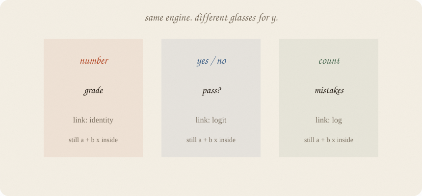
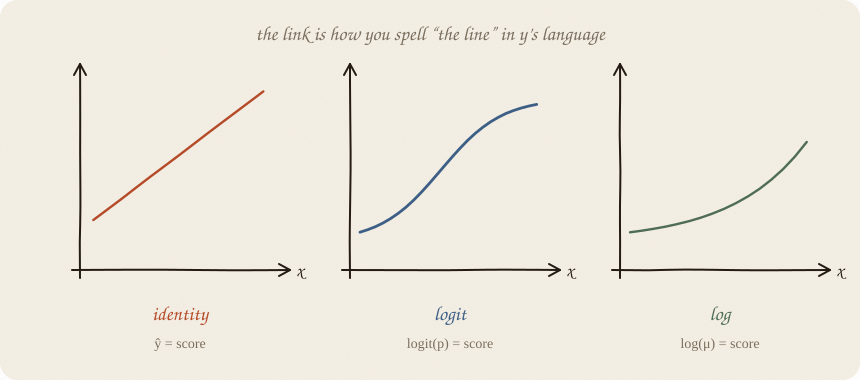
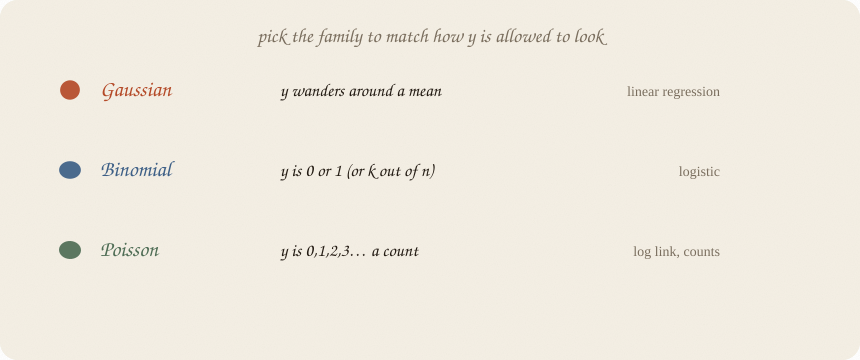
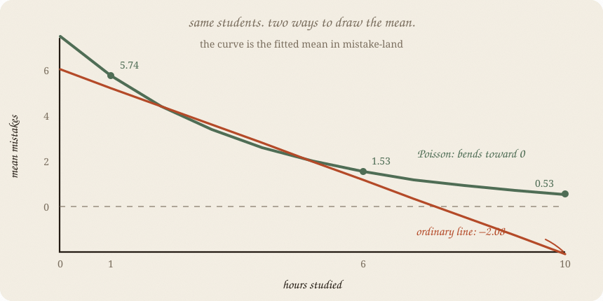

datazines · a sketchbook

Read 01 linear regression and 01 logistic regression. Those two are not strangers. They are the same machine in two outfits. This note is the family portrait.
Flip it like a notebook. One page = one idea. Done.
The regression shelf assumed y could sit anywhere on a number line. Grades. Heights. Minutes.
Sometimes y is yes/no.
Sometimes y is 0, 1, 2, 3… — how many mistakes on the exam.
Sometimes y is a wait time that cannot go negative.
Ordinary least squares will still fit a line. It will also predict −4 mistakes at 10 hours. The math does not blush. You should.
GLM = generalized linear model. Ugly name. Friendly idea: keep the linear score, change how it becomes ŷ, change what leftovers are allowed to look like.
Every GLM has three knobs of kind, not of number:
You do not pick a mysterious “GLM algorithm.” You pick how y is allowed to look, and the rest follows.
Logistic was already this: binomial family, logit link, linear score.

| link | says | you already know it as |
|---|---|---|
| identity | ŷ = score | linear regression |
| logit | logit(p) = score | logistic |
| log | log(μ) = score | counts, that stay positive |
Identity: score is the guess. Grades.
Logit: score is log-odds. Then the S. Pass/fail.
Log: score is log(mean). Exponentiate, never negative. Number of mistakes.
The link is not decoration. It is the promise that ŷ will not wander into a nonsense region.

Gaussian — leftovers are a blob around the mean. Classic line. Grades.
Binomial — each person is a coin with probability p. Pass/fail. Logistic.
Poisson — y is a count. Mean = variance, roughly. Mistakes, emails, accidents.
Wrong family: you can still get a number out. It will lie about uncertainty, and sometimes about the mean too. Pick the family by looking at y, not by looking at a menu of functions.
Same students. Now y = how many mistakes on the exam. More hours → fewer mistakes. Never below 0.

A Poisson GLM with a log link:
$$\log(\text{mean mistakes}) = a + b \cdot \text{hours}$$
The straight line lives on the hidden log(mean) scale. The curve is what we see back in mistake-land:
$$\text{mean mistakes} = e^{a + b \cdot \text{hours}}$$
Here, b = −0.264. One extra hour multiplies the mean by $e^{-0.264} \approx 0.77$ — about 23% fewer expected mistakes, wherever you start.
On these data, the Poisson curve goes from 5.74 mistakes at 1 hour to 1.53 at 6 hours. The ordinary line looks similar nearby, but by 10 hours it predicts −2.08 mistakes. The Poisson curve stays above zero. That is the glasses working.
Not a tree. Not a neural net. The score is still a line. If hours help, then plateau, then hurt, a GLM will not discover that S-bend for you unless you feed it a bent x.
Not automatic. “Run GLM” without choosing family + link is just linear regression in a fancier coat.
Not a cause machine. Same sermon as the first sketchbook.
Ridge / lasso taxes still exist on top of a GLM (penalized GLMs). Different sequel. Same tax idea.
If you keep only one thing:
linear inside. glasses outside. glasses chosen to match y.
Same thirty students as ridge, house seed 7. Same hours, sleep, tutor. y is not a grade — it is a Poisson count of mistakes. PoissonRegressor uses a log link. LinearRegression is the identity-link cousin — and it will go negative if you ask it far enough.
import numpy as np
from sklearn.linear_model import LinearRegression, PoissonRegressor
rng = np.random.default_rng(7)
n = 30
hours = rng.uniform(1, 6, n)
sleep = rng.uniform(4, 9, n)
tutor = (rng.random(n) > 0.6).astype(float)
lam = np.exp(2.4 - 0.35 * hours - 0.08 * (sleep - 6.5) - 0.4 * tutor)
mistakes = rng.poisson(lam)
ph = PoissonRegressor(alpha=0).fit(hours.reshape(-1, 1), mistakes)
lh = LinearRegression().fit(hours.reshape(-1, 1), mistakes)
print("poisson log(mean) = "
f"{ph.intercept_:.3f} + {ph.coef_[0]:.3f} · hours")
print("mean mistakes | 1 hour →", round(ph.predict([[1]])[0], 2))
print("mean mistakes | 6 hours →", round(ph.predict([[6]])[0], 2))
print("linear | 1 hour →", round(lh.predict([[1]])[0], 2))
print("linear | 6 hours →", round(lh.predict([[6]])[0], 2))
print("linear | 10 hours →", round(lh.predict([[10]])[0], 2))
poisson log(mean) = 2.011 + -0.264 · hours
mean mistakes | 1 hour → 5.74
mean mistakes | 6 hours → 1.53
linear | 1 hour → 5.21
linear | 6 hours → 1.16
linear | 10 hours → -2.08
Poisson: about 6 mistakes down to about 1.5. Always positive.
Ordinary line: still fine at 6 hours, then −2 at 10. The glasses were the point.
alpha=0 turns the penalty off so this is a plain GLM, not a ridge-GLM. sklearn’s score here is D² (like R² for this family), not R².
| piece | job |
|---|---|
| score | a + b x. always |
| link | translates score → ŷ |
| family | how y rattles |
| identity + Gaussian | linear regression |
| logit + binomial | logistic |
| log + Poisson | counts |
Reach for it when y is a count, a yes/no, a fraction, or anything with a legal region (can’t be negative, can’t exceed 1), and you still want readable knobs.
Skip it when a plain number and a straight cloud already fit (01 linear regression); you guessed the family because it sounded grown-up; the score itself should bend (trees, later shelves).
Pays you: one story for line, logistic, and counts. ŷ stays legal. b still has a sentence.
Costs you: you must choose glasses. Wrong family → smug, wrong uncertainty. Still linear inside.
Family portrait of the linear score. Costumes named: 01 distributions. Classification 01 is the yes/no outfit. Regression 01 is the grade outfit.
Flip it like a notebook. One page = one idea.